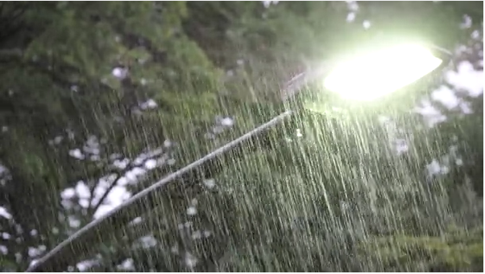
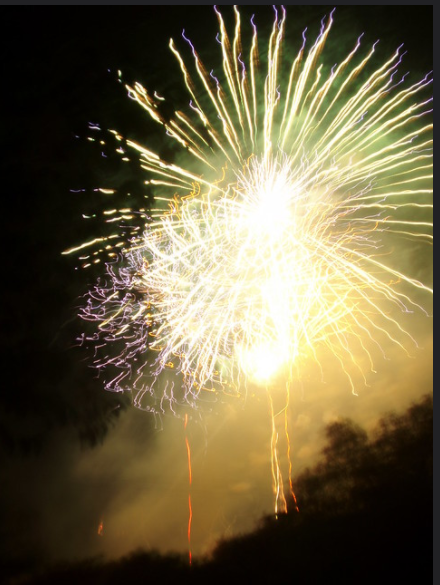
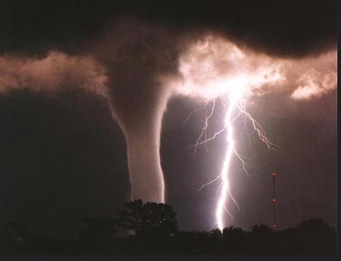
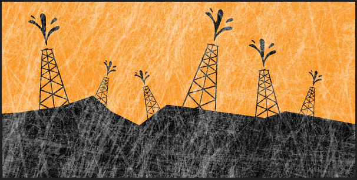
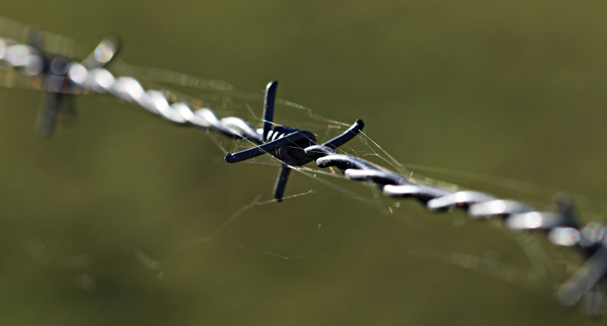
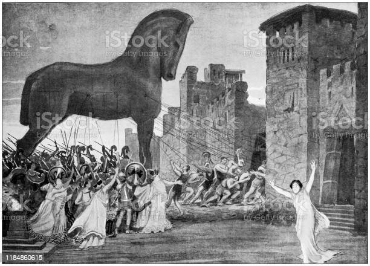
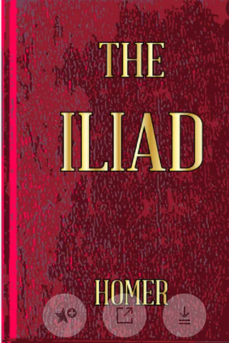

Diccionario
Aguaceros
Definición
Lluvia repentina, abundante, impetuosa y de poca duración
Ejemplo
Ayer cayó un gran aguacero en mi ciudad.
Centelleantes
Definición
Despedir destellos vivos y rápidos de manera intermitente.
Ejemplo
Esta estrella es muy centelleante.
Ciclones
Definición
Huracanes.
Ejemplo
En mi pueblo todos los otoños hay ciclones.
Combustibles fósiles
Definición
Son el petróleo, carbón y gas natural.
Ejemplo
Los combustibles fósiles son necesarios para nuestra vida diaria.
Efecto invernadero
Definición
Elevación de la temperatura de la atmósfera próxima a la corteza terrestre, debido a la presencia de una capa de gases, especialmente dióxido de carbono, procedentes de las combustiones industriales y otras actividades.
Ejemplo
Cada vez se nota más el efecto invernadero en el clima de nuestro planeta.
Escollo
Definición
Dificultad, obstáculo.
Ejemplo
El miedo a las alturas en un gran escollo para realizar escalada.
Guerra de Troya
Definición
Fue un conflicto bélico en el que se enfrentaron una coalición de ejércitos aqueos contra la ciudad de Troya, ubicada en Asia Menor, y sus aliados.
Ejemplo
Sobre la Guerra de Troya he visto una película.
Ilíada
Definición
Fue trama radica en la cólera de Aquiles.
Ejemplo
Este verano voy a leer la Ilíada
Recapitular
.png "Recapitular") Definición
Definición
Recordar sumaria y ordenadamente lo que por escrito o de palabra se ha manifestado con extensión.
Ejemplo
Es importante recapitular toda la información para contratar el viaje de estudios.
Sosiega
 Definición
Definición
Descansa después de un trabajo.
Ejemplo
María sosiega los domingos.